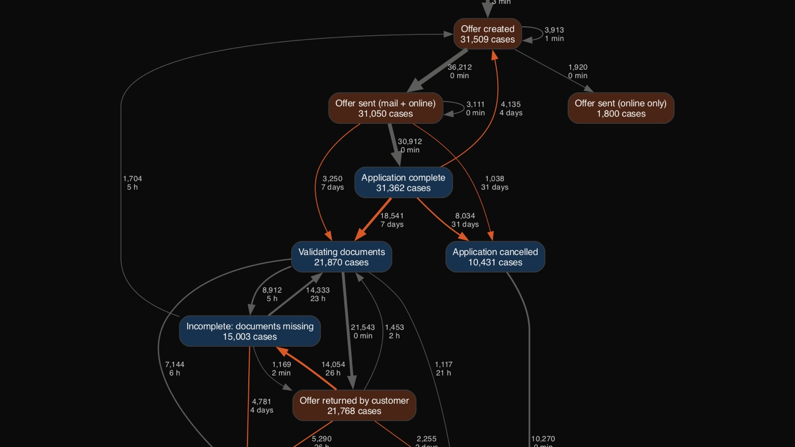
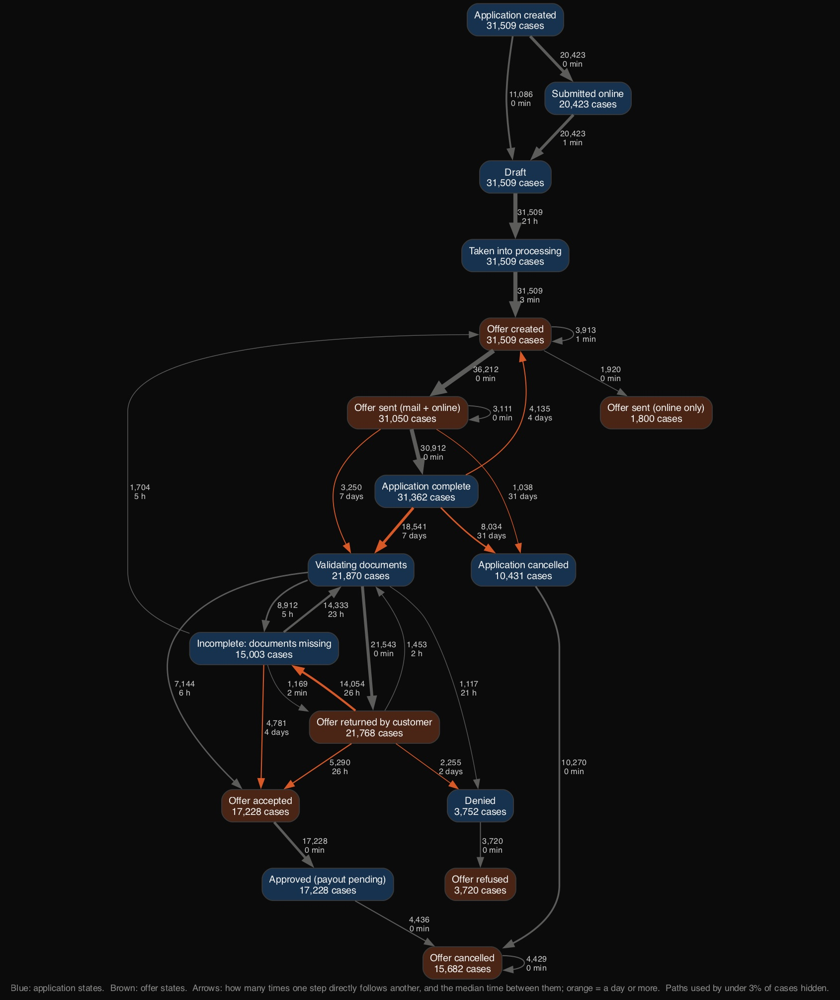
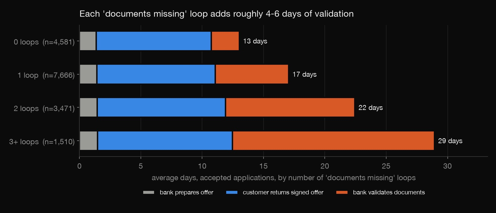
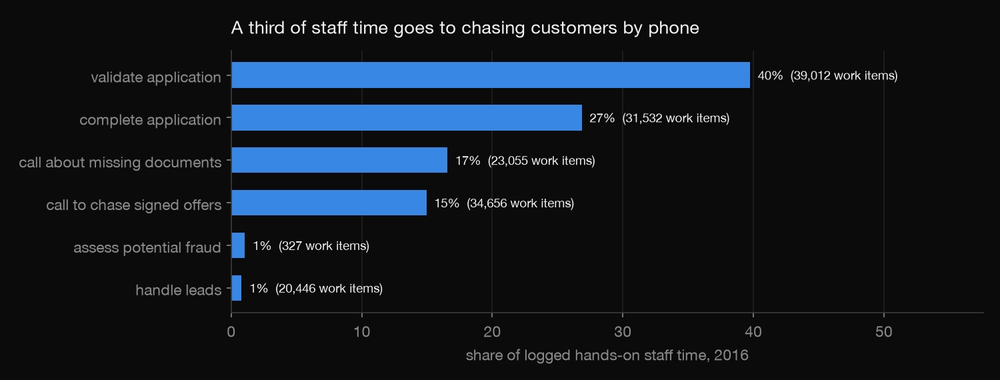
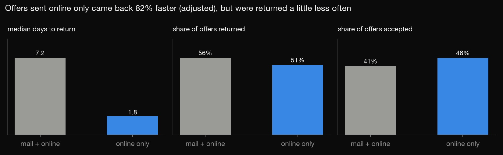

Python · Process mining · 2026-10
Where a Loan Process Loses Time
Process mining a Dutch bank's event log of 31,509 loan applications: the real process map, where the 18 days go, how much rework costs, and what to automate first.

Data: van Dongen (2017), BPI Challenge 2017, 4TU.ResearchData, doi:10.4121/uuid:5f3067df-f10b-45da-b98b-86ae4c7a310b. Used under the 4TU General Terms of Use (non-commercial, with attribution). The automation ideas are what the data supports, not tested changes.
01 — The problem
Digital transformation projects often start by automating whatever looks slow, without measuring where the time actually goes. A bank's loan system already records every step of every application. What does the process really look like, where do applications wait, and which changes would cut the most days?
02 — What I built
A process-mining analysis of the BPI Challenge 2017 event log (2016, 1.2 million events), written from scratch in Python:
- A process map (directly-follows graph) with how often each step follows another and the median wait.
- Stage timing, and hands-on work separated from waiting.
- Where staff time goes and how much of it is rework.
- A channel comparison: do offers sent online only come back faster, after adjusting for the loan?
03 — How it was built
- 01
Read the event log
The log comes in XES, the XML standard for event logs: each application is a trace and each step an event, with a timestamp, the staff member and a lifecycle status.
download.pystreams the 30 MB file into a flat table, one row per event.check.pyconfirms it matches the published statistics: 31,509 applications, 1,202,267 events and 26 activities.for kind, el in ET.iterparse(gzip.open(path), events=("start", "end")): - 02
Draw the real process
A directly-follows graph counts how often step B comes right after step A, and the median time between them. Orange arrows mark waits of a day or more. Both are visible: the long wait for customers to return signed offers, and the loop between "validating documents" and "documents missing". Paths used by under 3% of applications are hidden.

edges = e.groupby(["activity", "nxt"]).agg(count=("case", "size"), cases=("case", "nunique"), median_hours=("dt", "median")).reset_index() - 03
Separate work from waiting
Work items log start, suspend, resume and complete. Pairing each start or resume with the next suspend or complete gives hands-on time. Stretches over 4 hours are treated as items left open, which drops 649 of 254,370. The median approved application gets 33 minutes of logged work in 14.8 days, 0.15% of the elapsed time. The process is almost all waiting.
open_ = w["lifecycle"].isin(["start", "resume"]) & nxt_life.isin(["suspend", "complete", "ate_abort"]) - 04
Measure rework
Two-thirds of decided applications loop back at least once because documents are missing. Holding loan goal, type, amount and outcome equal, one loop means 29% longer. Each loop adds roughly 4–6 days of validation.


- 05
Compare the digital channel
About 5% of offers went out online only. Adjusting for loan goal, type, amount and month, they came back 82% faster (median 1.8 vs 7.2 days), but were returned slightly less often. Customers chose the channel, so this is a strong lead to test, not proof.

lm_days = smf.ols(f"np.log(days_to_return + 0.01) ~ online_only + {ctl}", back).fit(cov_type="HC3")
04 — Results
| Approved: stage | Days | Share |
|---|---|---|
| Bank prepares offer | 1.4 | 8% |
| Customer returns offer | 9.9 | 54% |
| Bank validates | 6.8 | 38% |
| Total (average) | 18.1 |
Of 31,509 applications, 55% were approved, 33% cancelled and 12% denied. The most common path of all (22%) ends with an offer sent and never returned; such offers are cancelled after about a month.
What to automate first, and what each targets:
- Online upload with a completeness check: the document loops in two-thirds of cases.
- E-signed online offers: the customer wait, 54% of the time.
- Automated reminders: 34,656 chase-call work items.
- An earlier nudge for silent offers: the 31-day timeouts.
The lesson: measure before automating. Staff work is a sliver of the elapsed time. The days are lost waiting for customers and in document loops, so the biggest wins are digital self-service steps, not faster back-office clicks.
05 — What I'd do next
- Conformance checking against the bank's intended process model.
- Predict, at offer time, which applications will go silent, and nudge those first.
- Repeat on a later BPI log to compare before and after a system change.